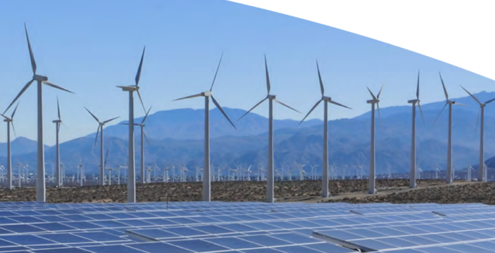
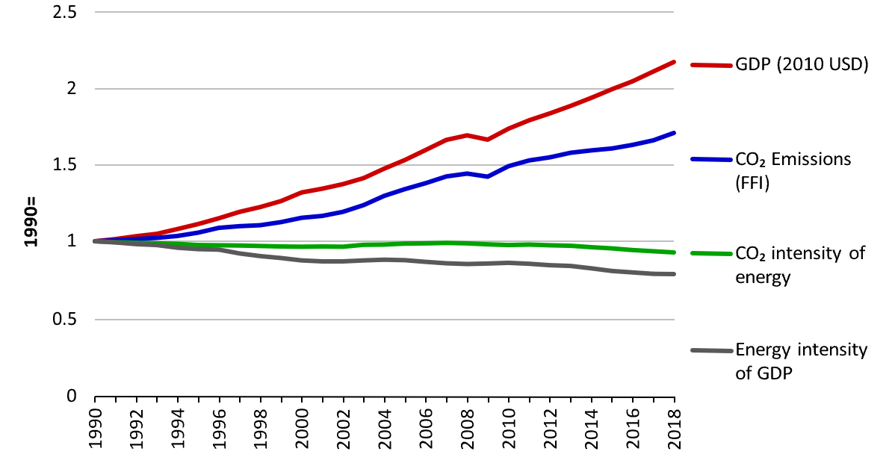

Chapter 2: Developments in international and European circumstances
Current Global Emissions:
In 2018 global emissions of CO2 from the combustion of fossil fuels and industrial
processes rose, an increase of around 2% from 2017 levels. This follows a 1% increase
in 2017, after very small increases between 2014 - 2016.
The 2018 increase reflects the fact that improvements in carbon intensity and energy
intensity were not enough to offset the effects of economic growth.
-
The carbon intensity of energy decreased 1% in 2018 relative to 2017.
This follows similar annual decreases since 2011, prior to which global
average carbon intensity of energy had been essentially flat since 1990.
-
The energy intensity of the global economy only fractionally improved in 2018,
reducing 0.1%, a significantly smaller improvement than that seen in recent years.
Improved energy intensity has been the dominant driver of the slight decoupling between
CO2 emissions and economic growth since 1990.
-
However, the effect of global economic growth in 2018 (3%, slightly higher than 2.8%
per year averaged over 2013 - 2017) more than offset these improvements.

-
China's estimated CO2 emissions grew by around 2.2% in 2018,
although historical Chinese energy statistics are often subject to substantial
revisions. This increase was driven by emissions from the burning of coal,
supplemented with increasing oil and gas consumption.
-
The USA's CO2 emissions increased 2.6% in 2018, driven in part by relatively
large heating and cooling demands of a cold winter and warm summer along with
strong economic growth. US CO2 emissions are projected to fall in 2019 and
2020 by a leading US energy agency.
-
India's CO2 emissions grew strongly at 7% in 2018, underpinned by strong economic growth.
Although renewable energy deployment continues rapidly, it is being outstripped by
energy demand growth, leading to rapidly growing coal consumption.
-
In the EU emissions of CO2 decreased by about 2% in 2018 relative to 2017 levels,
the first fall since 2014.
Changes in the global energy system:
Global energy demand grew by 2.9% in 2018, its largest increase since 2010. China, India
and the USA together accounted for over two-thirds of the global increase. Large demands
for heating and cooling due to weather effects contributed significantly to this large
increase in energy demand (estimated to be around one-quarter of the annual growth).
Around 70% of this increase was met with fossil-based energy:
-
Global coal capacity and generation both grew in 2018. Consumption grew at the fastest rate since 2013, but capacity is growing at a slowing rate with 51 GW of new capacity added and 31 GW retired across the globe. Projections from a range of
agencies indicate coal capacity and generation remaining close to constant between now and 2030.
-
Gas was the energy source (across high carbon and low carbon sources) that grew the most in 2018, growing at the fastest rate since 2010. This indicates both the increasing demand for energy around the world and switching between coal and gas.
It accounted for over 40% of the net increase in global energy demand.
-
Oil consumption grew in 2018 increasing by 1.5% above 2017 levels. This was slightly slower than the 1.7% increase in 2017 (above 2016 levels), in part due to higher oil prices.
-
Renewable generation increased again in 2018 (14.5% above 2017 levels), but at a slightly slower rate than in 2017 (17.6% above 2016 levels). It met around 33% of the additional demand for electricity. The fraction of global primary energy
demand met by renewables (4%), is now approximately equivalent to that met with nuclear energy.
-
Nuclear energy's generation increased by 2.4% in 2018, but its share of electricity generation remained largely unchanged (10%) due to growing global electricity demand. China accounted for about 75% of the increase.
-
Hydroelectricity contributes around 16% of global electricity generation, a fraction which has remained approximately constant over the last decade.
Advances in international and European climate policy:
Emissions projections suggest the world is beginning to move away from a
'business-as-usual' pathway, slowing the increase of climate risks in the
longer-term, but the climate continues to change rapidly today.
Observations of the state of the global climate over the past year are consistent
with longer-term trends of a climate that is changing due to human influence and
in line with IPCC projections:
-
Global mean surface temperature in 2018 was measured as the fourth warmest
year in all major observational datasets. Temperatures in the early part of
2018 were suppressed slightly due to a natural, small La Niña event.
-
Human-induced warming has continued to increase, rapidly approaching 1.1°C
above preindustrial levels when calculated consistently with the method used
in IPCC-SR1.5. This is a measure of the warming created by past and present
human activities and is independent of temporary warming and cooling from
natural climate oscillations, volcanic eruptions and changes in solar output.
IPCC-SR1.5 concluded that human-induced warming is currently increasing at
around 0.17°C per decade.
-
Atmospheric concentrations of greenhouse gases continued to increase. In 2018,
global average CO2 concentrations rose to 407 ppm, CH4 concentrations to 1858 ppb
and N2O concentrations to 331 ppm (46%, 157% and 23% above pre-industrial levels
respectively). The concentrations of all three gases increased from 2017 to reach
record highs. The increase in atmospheric methane was the second largest increase
this century - the contributions of changing natural and human sources of methane
emissions causing this increase remains unclear.
-
Ocean heat content increased to record levels in 2018. More than 90% of the additional
energy trapped in the climate system by raised greenhouse gas concentrations ends up in
the oceans, making ocean heat content a more consistent indicator of human influence on
the climate than global mean surface temperature. Absorbing CO2 from the atmosphere is
increasing the acidity of the oceans, leading to a decrease in pH of around 0.1 since
the pre-industrial period. This is around a 25% increase in acidity, which can affect
the ability of coral organisms to build shells creating knock-on effects on whole
marine ecosystems.
-
Sea levels continue to rise, with the global average sea level around 3.7 mm higher than
in 2017. The rate at which global sea-levels are rising is increasing over time.
Evidence of changing climate extremes in the UK continues to be documented and linked with
changes in the global climate. For example:
-
The annual average number of 'warm spell' days have more than doubled between 1961 -
1990 and 2008 - 2017.
-
The total amount of rainfall falling on 'extremely wet days' has increased by around
17% over the same period.
-
In 2018, late spring and early summer were dominated by a long-lasting period of heat
and drought, particularly in the south of England. It was the UK's equal warmest summer
on record. Climate change means that the UK average summer temperature is now expected
to exceed 2018 levels in around 12% of years. Without human influence on the climate,
such extremes would only occur in around 0.5% of years. Around 2050 a summer as warm
as or warmer than 2018 would be expected in around 50% of years due to continued GHG
emissions.
Next steps in international climate policy:
The United Nations Framework Convention on Climate Change (UNFCCC) is now beginning the first
'ambition round' under the Paris Agreement, with all countries required by the end of 2020 to
resubmit their first NDC. Countries are also required to submit 'long-term low greenhouse gas
emission development strategies' (focused on mid-century) by the same date. The UK should aim
to maximise the international impact of setting a net-zero emissions target to help move the
world towards a lower-carbon future at this crucial time in the international process.
Upcoming milestones in this process include:
-
The UN Climate Action Summit, to be held in New York on 23 September 2019. This offers the
first opportunity for countries to gather and signal their intentions for increasing NDC
ambition. The UK is leading a focus area on climate resilience at this summit.
-
The publication of IPCC special reports on Climate Change and Land and The Ocean and the
Cryosphere in a Changing Climate in August and September 2019 respectively, which will
inform negotiations at COP25.
-
COP25 in Chile in December 2019, which will offer another opportunity for countries to
communicate enhanced NDCs. It will have a particular focus on the effect of climate change
on the oceans.
-
COP26 (at the end of 2020), which is expected to be the major focus point for efforts to
raise NDC ambition.